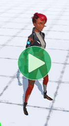
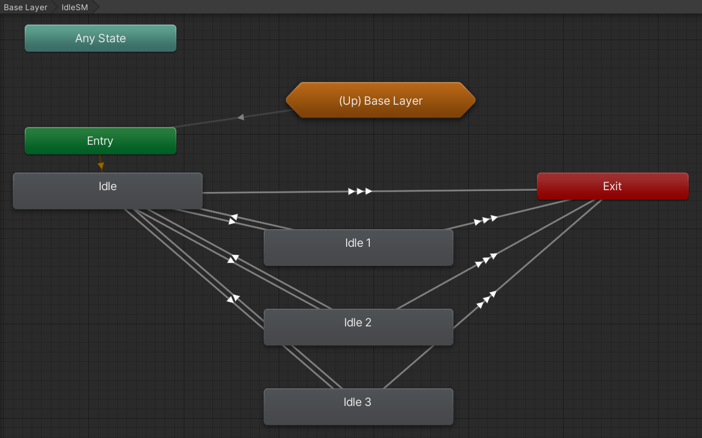
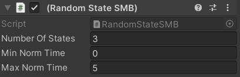
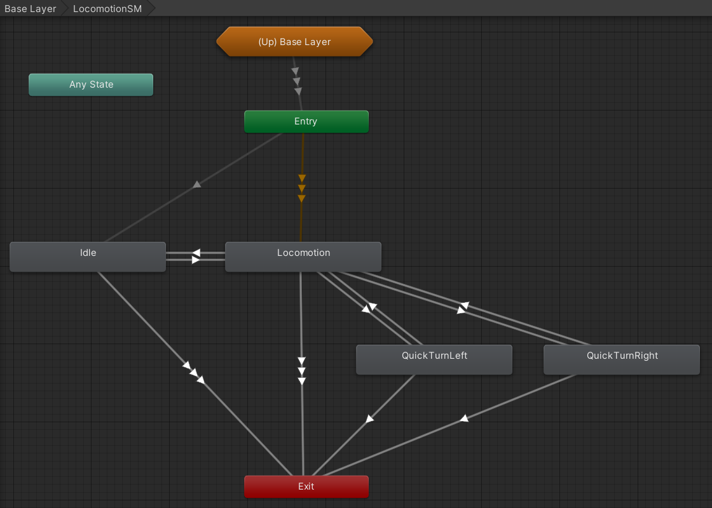
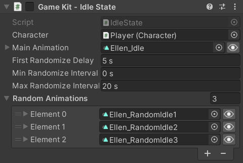
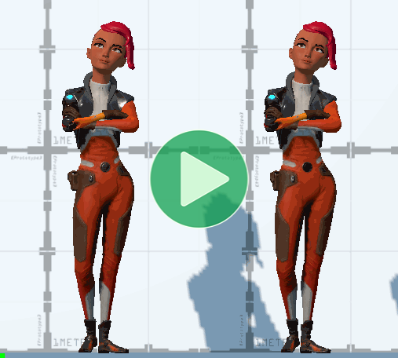

This page is part of the 3D Game Kit sample.
It's fairly common for games to have a single default Idle animation as well as one or more others that can start playing if the default one plays for too long to show the character fidgeting or getting bored.

Mecanim
The Mecanim character's IdleSM state is a Sub State Machine containing a regular default state and 3 others:

The default state has a StateMachineBehaviour to handle the countdown to play the other states:

At first glance, that seems like it should be everything we need for the desired behaviour, but according to the Inspector the minimum wait time is set to 0 which seems odd. That would mean there is a chance for the character to become bored as soon as they stop walking or finish an attack.
Upon further investigation, it turns out that most other states do not actually have a direct transition back to IdleSM. Instead, there is actually another Idle state inside the LocomotionSM sub state machine:

So most states return to LocomotionSM.Idle which has a transition to the real IdleSM.Idle state (both of which use the same AnimationClip) based on the TimeoutToIdle trigger parameter.
Looking at the Animator Controller gives us no indication of where or how that parameter is used, but if we search through the code for its name we find it being used for a hash code:
readonly int m_HashTimeoutToIdle = Animator.StringToHash("TimeoutToIdle");
Which is used in the TimeoutToIdle method that gets called every FixedUpdate:
public float idleTimeout = 5f;// How long before Ellen starts considering random idles.
protected float m_IdleTimer;// Used to count up to Ellen considering a random idle.
// Called each physics step to count up to the point where Ellen considers a random idle.
void TimeoutToIdle()
{
bool inputDetected = IsMoveInput || m_Input.Attack || m_Input.JumpInput;
if (m_IsGrounded && !inputDetected)
{
m_IdleTimer += Time.deltaTime;
if (m_IdleTimer >= idleTimeout)
{
m_IdleTimer = 0f;
m_Animator.SetTrigger(m_HashTimeoutToIdle);
}
}
else
{
m_IdleTimer = 0f;
m_Animator.ResetTrigger(m_HashTimeoutToIdle);
}
m_Animator.SetBool(m_HashInputDetected, inputDetected);
}
Now we can finally understand what happens when the character becomes Idle:
- When you stop moving, land from a jump, finish an attack, etc. you go to the
LocomotionSM.Idlestate. - A timer runs constantly, but resets to 0 any time you press a button or leave the ground.
- If the timer reaches 5 seconds, it sets the
TimeoutToIdletrigger parameter so if you are in theLocomotionSM.Idlestate it transitions to theIdleSM.Idlestate. - Both of those states have the same
AnimationClipso there is no visual difference, but now theRandomStateSMBattached toIdleSM.Idlestarts. - When that timer starts it picks a random finish time between 0 and 5. This time it's using normalized time, so in terms of seconds that's actually between 0 and 5 x the length of the default Idle animation (5 x 3.933 = 19.665 seconds).
- Once that timer finishes, it sets the
RandomIdleparameter to a random number between 0 and 2 (inclusive). - The
IdleSM.Idlestate has a transition to each of the other animations in response to each possible number. - Once any of the animations finishes, it returns to
IdleSM.Idleand starts from step 5 again. - Any interruptions cancel the whole thing and will start from step 1 next time you become Idle.
Yet again, the character tried to do something really simple but since it was slightly outside the capabilities of the Animator Controller state machine system the logic ended up being scattered across several scripts, Inspector data in several different places, two Animator Controller parameters, two different timers, and to top it all off there is an Idle state in the Locomotion sub state machine.
Animancer
With Animancer, all the above logic is defined by the IdleState script. As usual, this means less configuration in the Unity Editor in exchange for more code and it is significantly easier to understand the logic:
using Animancer;
using Animancer.Units;
using System;
using UnityEngine;
public class IdleState : CharacterState
{
[SerializeField] private ClipTransition _MainAnimation;
[SerializeField, Seconds] private float _RandomizeDelay = 5;
[SerializeField, Seconds] private float _MinRandomizeInterval = 0;
[SerializeField, Seconds] private float _MaxRandomizeInterval = 20;
[SerializeField] private ClipTransition[] _RandomAnimations;
private bool _JustStarted;
private float _RandomizeTime;
protected virtual void Awake()
{
Action onEnd = PlayMainAnimation;
for (int i = 0; i < _RandomAnimations.Length; i++)
{
_RandomAnimations[i].OnEnd = onEnd;
}
}
public override bool CanEnterState => Character.Movement.IsGrounded;
protected virtual void OnEnable()
{
PlayMainAnimation();
_RandomizeTime += _FirstRandomizeDelay;
}
private void PlayMainAnimation()
{
_RandomizeTime = UnityEngine.Random.Range(_MinRandomizeInterval, _MaxRandomizeInterval);
Character.Animancer.Play(_MainAnimation);
}
protected virtual void FixedUpdate()
{
if (Character.CheckMotionState())
return;
Character.Movement.UpdateSpeedControl();
AnimancerState state = Character.Animancer.States.Current;
if (state == _MainAnimation.State &&
state.Time >= _RandomizeTime)
{
PlayRandomAnimation();
}
}
private void PlayRandomAnimation()
{
int index = UnityEngine.Random.Range(0, _RandomAnimations.Length);
ClipTransition animation = _RandomAnimations[index];
AnimancerState state = Character.Animancer.Play(animation);
state.FadeGroup.SetEasing(Easing.Sine.InOut);
}
}

We start with some serialized fields to show in the Inspector (with appropriate Units Attributes):
[SerializeField] private ClipTransition _MainAnimation;
[SerializeField, Seconds] private float _FirstRandomizeDelay = 5;
[SerializeField, Seconds] private float _MinRandomizeInterval = 0;
[SerializeField, Seconds] private float _MaxRandomizeInterval = 20;
[SerializeField] private ClipTransition[] _RandomAnimations;
Note that we aren't using normalized time like the Mecanim did because there is really no need to. It's much easier to understand values in seconds instead of needing to know how long the animation is to determine how long it will actually wait.
Startup
On startup, we give each of the random animations an End Event to call the PlayMainAnimation method as if this state had just been entered again. We could just do OnEnd = PlayMainAnimation instead of declaring the Delegate first, but that assignment is actually shorthand for OnEnd = new Action(PlayMainAnimation) which would create a new delegate object for each animation. This way all animations just share the same object.
protected virtual void Awake()
{
Action onEnd = PlayMainAnimation;
for (int i = 0; i < _RandomAnimations.Length; i++)
{
_RandomAnimations[i].OnEnd = onEnd;
}
}
State Entry
When the state is actually entered (OnEnable) it picks an amount of time to wait for randomization and starts the _MainAnimation, then adds the _FirstRandomizeDelay to the timer. But when one of the random animation finishes, it only calls PlayMainAnimation so it does not add the _FirstRandomizeDelay (the IdleTimeOut from the Mecanim character).
protected virtual void OnEnable()
{
PlayMainAnimation();
_RandomizeTime += _FirstRandomizeDelay;
}
private void PlayMainAnimation()
{
_RandomizeTime = UnityEngine.Random.Range(_MinRandomizeInterval, _MaxRandomizeInterval);
Character.Animancer.Play(_MainAnimation);
}
Check Motion State
In FixedUpdate we start by having the Character check if it needs to enter the Idle, Locomotion, or Airborne state depending on whether the character is grounded and the movement input from the brain:
protected virtual void FixedUpdate()
{
if (Character.CheckMotionState())
return;
...
// Character.cs:
public bool CheckMotionState()
{
CharacterState state;
if (Movement.IsGrounded)
{
state = Parameters.MovementDirection == Vector3.zero
? StateMachine.DefaultState
: StateMachine.Locomotion;
}
else
{
state = StateMachine.Airborne;
}
return
state != StateMachine.CurrentState &&
StateMachine.TryResetState(state);
}
In an Animator Controller you need to manually set up the same transitions all over the place. For example, many states have exit transitions to the Airborne state based on the Grounded parameter so every time a new state is added you also need to make those same transitions. Adding a new movement state such as Swimming or Flying would mean that you need to basically go through every state with a transition to Airborne and add a transition to the new state. However, doing it in code with a standard CheckMotionState method means that any newly added state can clearly have the same standard transitions and any modifications to that method will automatically affect everything which calls that method.
Update Speed Control
At this point we know we're still Idle this frame so we just want to decelerate the CharacterMovement.ForwardSpeed. We might as well share the same logic that other states will use for movement, so we put that function in the CharacterMovement class:
// IdleState.cs:
protected virtual void FixedUpdate()
{
...
Character.Movement.UpdateSpeedControl();
}
// CharacterMovement.cs:
public void UpdateSpeedControl()
{
Vector3 movement = _Brain.Movement;
movement = Vector3.ClampMagnitude(movement, 1);
DesiredForwardSpeed = movement.magnitude * _Stats.MaxSpeed;
float deltaSpeed = movement != Vector3.zero ? _Stats.Acceleration : _Stats.Deceleration;
ForwardSpeed = Mathf.MoveTowards(ForwardSpeed, DesiredForwardSpeed, deltaSpeed * Time.deltaTime);
}
Exit Transition
Finally, we check if the current state is the _MainAnimation and it has passed the _RandomizeTime that was chosen when it started to choose one of the random animations to play:
protected virtual void FixedUpdate()
{
...
AnimancerState state = Character.Animancer.States.Current;
if (state == _MainAnimation.State &&
state.Time >= _RandomizeTime)
{
PlayRandomAnimation();
}
}
private void PlayRandomAnimation()
{
int index = UnityEngine.Random.Range(0, _RandomAnimations.Length);
ClipTransition animation = _RandomAnimations[index];
Character.Animancer.Play(animation);
}
Custom Fade
The Mecanim character uses a fixed transition duration of 0.25 seconds between each of the idle animations. That causes a rather sudden change in the character's motion which the Animancer character smoothes out a bit by using 0.5 seconds instead. Each transition could have its duration further customised to suit each individual animation, but that is not the goal of this sample. However, we can smooth out the transition by applying a Custom Easing function right after starting the transition to replace its default linear interpolation.
private void PlayRandomAnimation()
{
...
AnimancerState state = Character.Animancer.Play(animation);
state.FadeGroup.SetEasing(Easing.Sine.InOut);
}
The following video compares the default Linear Interpolation (left) with the Sine In Out function (right). The differences are fairly subtle, but if you look at the way the left character suddenly changes direction for each transition you can see that the right character does so a bit more smoothly.

Adding More Idles
Aside from the distribution of data and logic, there is one more notable difference between the two approaches: the use of data structures. Consider the process of adding another animation to the random possibilities:
| Mecanim | Animancer |
|---|---|
|
|
The Animancer setup is clearly superior in this regard. Mecanim requires several extra manual steps for every change where Animancer can simply use any array size. Every one of those manual steps is a waste of time upfront and an opportunity to make a mistake which will waste more time later on when you need to track down bugs.